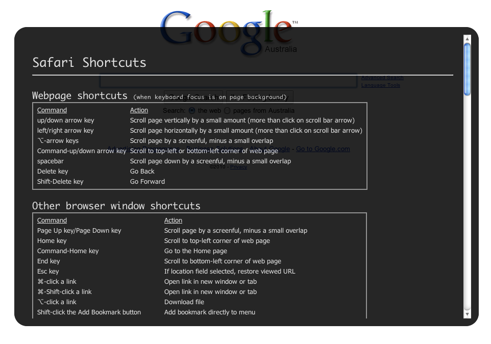

Shortcuts is a bookmarklet that, when clicked on, will bring up an overlay window containing all of your browser's keyboard shortcuts.
Shortcuts is available for Safari and Firefox on Mac OS X and for Firefox on Windows. To install Shortcuts, click and drag the appropriate bookmarklet up to your bookmarks bar:
Mac OS X Users
Windows Users